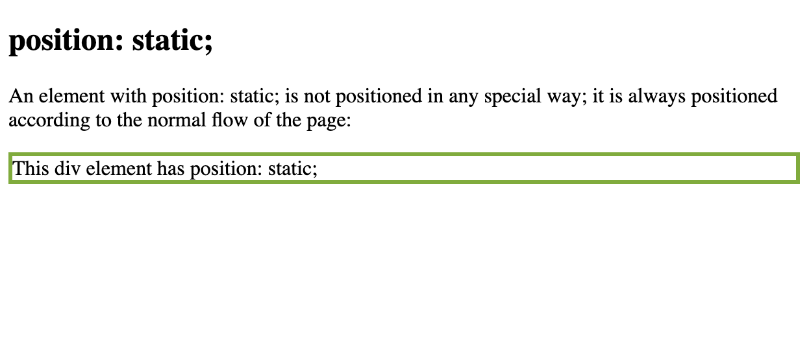
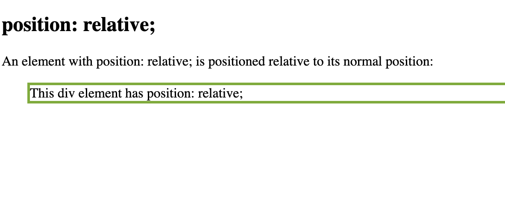
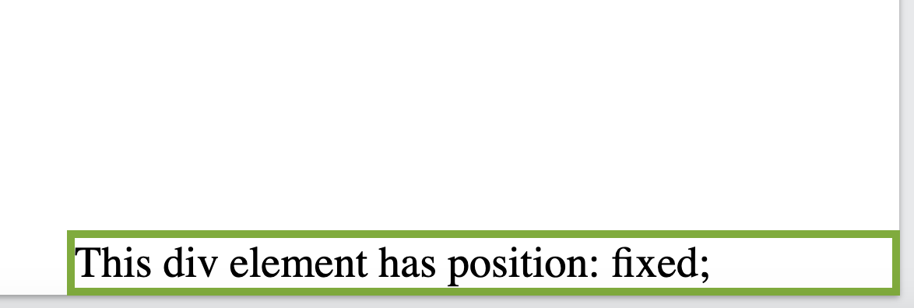
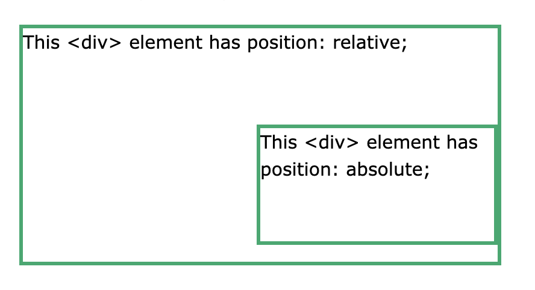

Există cinci valori diferite de poziție:
Elementele HTML sunt poziționate statice în mod implicit. Elementele poziționate statice nu sunt afectate de proprietățile de sus, jos, stânga și dreapta. Un element cu poziție: static este întotdeauna poziționat conform fluxului normal al paginii.
div.static { position: static; border: 3px solid #73AD21; }
Un element cu poziție: relativă este pozitionat fata de pozitia sa normala. Setarea proprietăților de sus, dreapta, jos și stânga ale unui element relativ poziționat va face ca acesta să fie ajustat departe de poziția sa normală.
div.relative { position: relative; left: 30px; border: 3px solid #73AD21; }
Un element cu poziție: fixed este poziționat în raport cu fereastra, ceea ce înseamnă că rămâne întotdeauna în același loc chiar dacă pagina este derulată. Proprietățile de sus, dreapta, jos și stânga sunt folosite pentru a poziționa elementul. Un element fix nu lasă un gol în pagina în care ar fi fost localizat în mod normal.
div.fixed { position: fixed; bottom: 0; right: 0; width: 300px; border: 3px solid #73AD21; }
Un element cu poziție: absolut; este poziționat în raport cu cel mai apropiat strămoș poziționat. Elementele poziționate absolut sunt îndepărtate din fluxul normal și se pot suprapune elementelor.
div.absolute { position: absolute; top: 80px; right: 0; width: 200px; height: 100px; border: 3px solid #73AD21; }
Când elementele sunt poziționate, acestea se pot suprapune cu alte elemente.Proprietatea z-index specifică ordinea stivei (stack) unui element (care ar trebui să fie plasat în fața sau în spatele celorlalți). Un element poate avea o ordine de stivă(stack) pozitivă sau negativă:
Notă: z-index funcționează numai pe elementele poziționate (poziție: absolută, poziție: relativă, poziție: fixă sau poziție: lipicioasă) și elemente flexibile (elementele care sunt copii direcți ai afișajului: elemente flexibile).
Exemple: